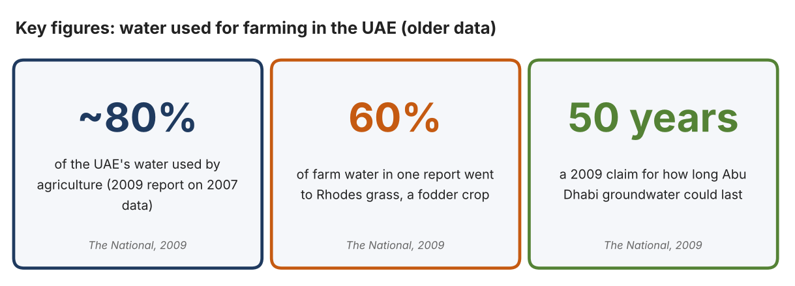
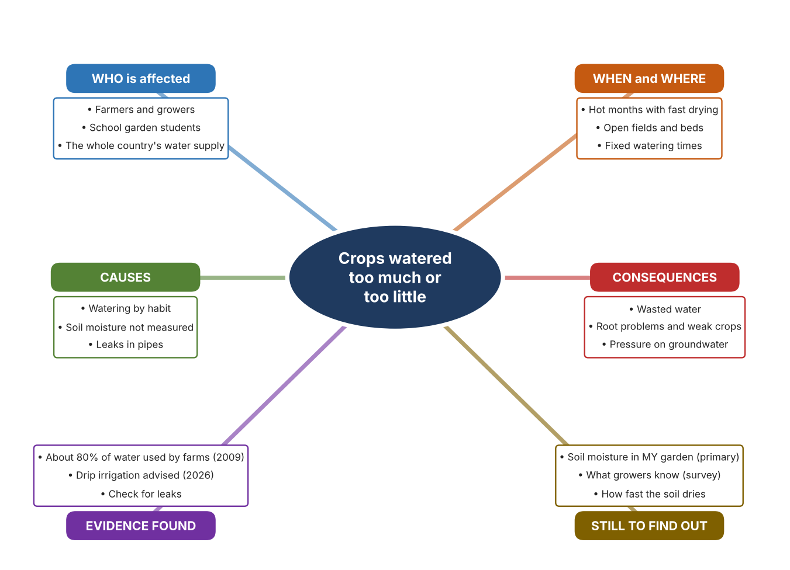
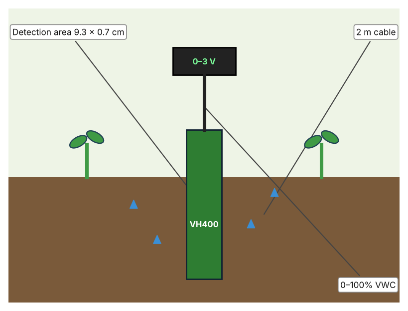
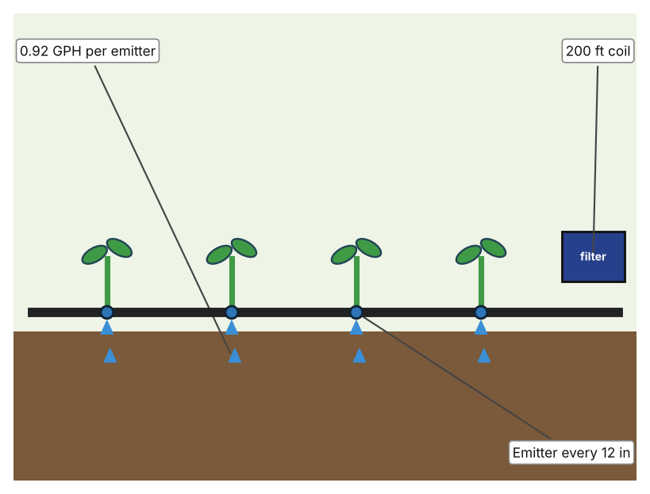
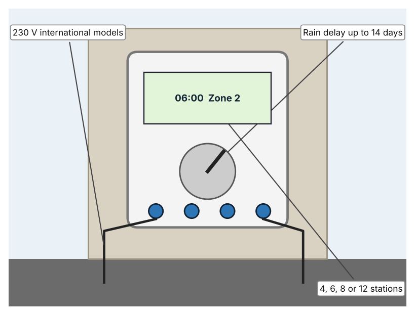

A1 · Design need
Identify and explain the problem faced by your client and community.
My client is the Eco Club of a Dubai school, represented by its teacher adviser. The club grows vegetables in a school garden and wants to use less water without harming the plants. It needs watering to match what the soil actually needs, so that water is not wasted on soil that is already wet.
The people most affected are the students and growers who water the garden, because they decide how much to give. Farmers are a second group, because water is a major cost and a limited resource. The wider community is a third group, because farm water comes from the same limited supply as drinking water.
The need is real because farming uses a very large share of the country's water. The National reported in 2009 that agriculture used about 80 percent of the UAE's water, that about 60 percent of farm water in one report went to Rhodes grass, and that Abu Dhabi's groundwater could run out within 50 years if use continued (Todorova). A 2026 Khaleej Times article quoted a UAE farmer who advised drip irrigation and regular checks for leaks (Al Qaydi). The first article is from 2009, using data from around 2007, so the figures may have changed, and the second is one farmer's advice, so I need to find out about my own garden.
Figure 1 summarises the key numbers. They are old and national, so I treat them as a pattern and not as proof about my school. In my own words: water given to soil that is already wet is wasted, and I cannot tell how wet soil is just by looking at the surface. Figure 2 is my mind map of the problem.
284 words


A2 · Research plan
Six research questions of different types, each with a priority, a research type and evidence.
| # | Question | Priority | Primary / secondary | Evidence | Brief answer |
|---|---|---|---|---|---|
| 1 | Factual: How much of the UAE's water is used for farming? | High | Secondary | The National, 2009 (Appendix A, Source 1) | About 80% of water used by agriculture (2007 data); agriculture about 4% of GDP; Abu Dhabi groundwater could run out within 50 years (a 2009 claim); Rhodes grass 60% of farm water in one report. |
| 2 | Factual: What does a UAE farmer advise about watering? | High | Secondary | Khaleej Times, 2 Sept. 2026 (Appendix A, Source 2) | Use drip irrigation, check for leaks, prepare soil before planting. |
| 3 | Conceptual: How can soil moisture be measured, and how can water be delivered or controlled? | Medium | Secondary | VH400 page (Source 3); Netafim page (Source 4); Rain Bird page (Source 5) | A sensor outputs a voltage related to soil water; a dripline releases water slowly through emitters; a controller starts and stops watering on a schedule. |
| 4 | Debatable: Should growers measure soil moisture, change how water is delivered, or automate the schedule? | Medium | Secondary | Appendix A, Sources 3, 4 and 5 | A sensor shows what the soil needs; a dripline wastes less water; a controller saves effort but follows a schedule, not the soil. My view: measurement ties the other two to real need. |
| 5 | Debatable (challenges my assumption, UAE source): Once a garden uses drip irrigation, overwatering is no longer a problem and measuring soil moisture is not needed. | High | Secondary | Khaleej Times, 2026 (Source 2); The National, 2009 (Source 1) | The farmer recommends drip irrigation and checking for leaks, which shows that even drip systems can waste water. A dripline delivers water slowly but does not know when the soil is already wet. |
| 6 | Factual (primary): How wet is the soil in our garden before and after watering, and how do students decide when to water? | High | Primary | Own soil readings and survey (Appendix A, Sources 6 and 7) | [Student data needed: write the soil descriptions or readings (before and after watering) and survey averages, then two sentences on the pattern you see.] |
A3 · Existing products
Three significantly different products, each analysed with ACCESS FM, with pros and cons.
Product 1: Soil moisture sensor (Vegetronix VH400)

Illustration by the author based on the VH400 data sheet, Vegetronix (Appendix A, Source 3). [Student: replace with a photo from the source, cited MLA 9]
Product 2: Drip irrigation tubing (Netafim Techline EZ)

Illustration by the author based on the Techline EZ listing, Hydrobuilder (Appendix A, Source 4). [Student: replace with a photo from the source, cited MLA 9]
Product 3: Irrigation controller (Rain Bird ESP-TM2)

Illustration by the author based on the ESP-TM2 page, Rain Bird (Appendix A, Source 5). [Student: replace with a photo from the source, cited MLA 9]
ACCESS FM analysis
| ACCESS FM | Product 1 | Product 2 | Product 3 |
|---|---|---|---|
| Aesthetics | Slim probe on a cable; look not described. | Black tubing with built-in emitters; look not described. | Wall-mounted controller box; look not described. |
| Cost | Price not shown. | US$55.74 for a 200 ft coil (Hydrobuilder). | Price not shown. |
| Customer | Growers who want to know how wet soil is. | Growers who water rows of crops. | Growers who water several zones on a timer. |
| Environment | Powered at 3.5–20 V; battery use is not stated. | Pressure-compensating emitters; no water-saving figure given. | 10-year lithium battery keeps the clock; 230 V models for international use. |
| Size | Detection area 9.3 × 0.7 cm; cable 2 m, extendable to 10 m. | 12 mm tube; 200 ft coil; emitters every 12 in. | Size is not stated. |
| Safety | Works from 3.5 to 20 V and under 13 mA. | Works at 6–58 psi. | Rain delay up to 14 days; LNK2 Wi-Fi module sold separately. |
| Function | Outputs 0–3 V proportional to soil water, accurate to 2% at 25°C. | Releases 0.92 gallons per hour at each emitter. | Starts and stops watering by zone and season. |
| Materials | Materials are not stated. | Materials are not stated. | Materials are not stated. |
Pros and cons
| Product 1 | Product 2 | Product 3 | |
|---|---|---|---|
| Pro | Directly measures the thing that matters: water in the soil. | Delivers water slowly where it is needed. | Runs on a timer without anyone present. |
| Con | Measures only; someone or something must act on the reading. | Does not know whether the soil is already wet. | Follows a schedule and does not sense the soil. |
A4 · Design brief
Restate the need, summarise the research and the existing products, and state the design intent.
My client, the Eco Club of a Dubai school, needs watering to match what the soil actually needs, so that water is not wasted on soil that is already wet. The problem is real: a 2009 report said agriculture used about 80 percent of the UAE's water (Appendix A, Source 1). A UAE farmer advises drip irrigation and regular checks for leaks (Appendix A, Source 2).
My research shows that farming uses most of the country's water and that growers are advised to water carefully (Appendix A, Sources 1 and 2). The figures are old and national, so I need my own evidence about how much water my own garden really uses. My debatable questions led me to decide that measuring, delivery and scheduling each cover only part of the problem, and my challenged assumption (that drip irrigation removes the need to measure soil moisture) showed me that even efficient delivery does not know when the soil is already wet. I will gather my own evidence with soil readings and a survey, always with permission (Appendix A, Sources 6 and 7).
I analysed three very different existing solutions. A soil moisture sensor measures water in the soil to within 2 percent at 25°C, but it only measures (Appendix A, Source 3). A drip line delivers 0.92 gallons per hour at each emitter, but it does not know whether the soil is already wet (Appendix A, Source 4). A controller can delay watering for up to 14 days after rain, but it follows a schedule and not the soil (Appendix A, Source 5). They give me three ideas for inspiration: measuring, delivering slowly, and scheduling, and I will compare them against what my own readings show. Each has a weakness that another covers.
My design intent is therefore to create a solution that shows how much water the soil holds, so that people can water only when needed. It must be affordable, easy for students to read, waterproof, durable in sun and soil, and accurate. I have deliberately not fixed what form it will take. That decision will be made in Criterion B, after I analyse my own readings and survey against the evidence in Appendix A.
366 words
Appendix A · Research notes and sources
Secondary sources in MLA 9, with notes and where each source is used.
| # | Source (MLA 9) | Key notes | Used in |
|---|---|---|---|
| 1 | Todorova, Vesela. “A Growing Thirst We Need to Curb.” The National, 2 Sept. 2009, thenationalnews.com/uae/a-growing-thirst-we-need-to-curb-1.510704. Accessed 21 Oct. 2026. | Agriculture about 80% of UAE water; about 4% of GDP; Abu Dhabi groundwater could run out within 50 years (2009 claim); Rhodes grass 60% of farm water in one report. Old (2007 data). | A1; A2 Q1 and Q5; A4. |
| 2 | Al Qaydi, Ruqayya. “UAE Farmer Shares Advice for First-Time Growers, How to Prepare for Winter.” Khaleej Times, 2 Sept. 2026, www.khaleejtimes.com/uae/uae-farmer-advice-first-time-winter-preparation-crops. Accessed 21 Oct. 2026. | Drip irrigation; check for leaks; improve soil before planting. One farmer's advice. | A1; A2 Q2 and Q5; A4. |
| 3 | “VH400 Soil Moisture Sensor.” Vegetronix, www.nawodnienia.eu/files/843973881/torovh400eng.pdf. Accessed 21 Oct. 2026. | 0–100% VWC; 2% accuracy at 25°C; 0–3 V output; 3.5–20 V supply; under 13 mA; detection area 9.3 × 0.7 cm; 2 m cable, extensible to 10 m; price not listed. A reseller's copy of the data sheet. | A2 Q3 and Q4; A3 Product 1; A4. |
| 4 | “Netafim Techline EZ Dripline .92 GPH Flow, 12 Inch Emitter Spacing, 200 Foot Coil.” Hydrobuilder, hydrobuilder.com/products/netafim-techline-ez-dripline-92-gph-flow-12-inch-emitter-spacing-200-foot-coil. Accessed 21 Oct. 2026. | 0.92 GPH; 12 in spacing; 200 ft coil; 6–58 psi; pressure-compensating; 12 mm tube; US$55.74. | A2 Q3 and Q4; A3 Product 2; A4. |
| 5 | “ESP-TM2 Series Controllers.” Rain Bird, rainbird.com/products/esp-tm2-series-controllers/. Accessed 21 Oct. 2026. | 4, 6, 8 or 12 stations; seasonal adjust; rain delay up to 14 days; 230 V international models; LNK2 Wi-Fi module sold separately; 10-year lithium battery clock; price not shown. | A2 Q3 and Q4; A3 Product 3; A4. |
| 6 | Primary: soil moisture readings, completed by the student on [date]. Accessed own data. | [Student: summarise your counts.] | A2 primary question; A4. |
| 7 | Primary: survey of [number] people, completed on [date]. | [Student: summarise your averages.] | A2 primary question; A4. |
Primary research instrument 1: soil moisture readings
Student checks soil only in the school garden with the teacher present; it does not need any electrical equipment.
| Place in garden | Time | Before or after watering | Feels dry / damp / wet | Reading (if any) | Notes |
|---|---|---|---|---|---|
| Bed 1 | |||||
| Bed 2 | |||||
| Shaded corner | |||||
| Open ground |
Primary research instrument 2: survey
Rate each statement from 1 (strongly disagree) to 5 (strongly agree). Collect responses with permission and record no names.
| Statement | 1 | 2 | 3 | 4 | 5 | Total responses |
|---|---|---|---|---|---|---|
| I know how to tell when the soil needs water. | ||||||
| I water on a fixed schedule, whatever the soil feels like. | ||||||
| I have seen water wasted in the garden. | ||||||
| I would use a soil moisture reading to decide when to water. |